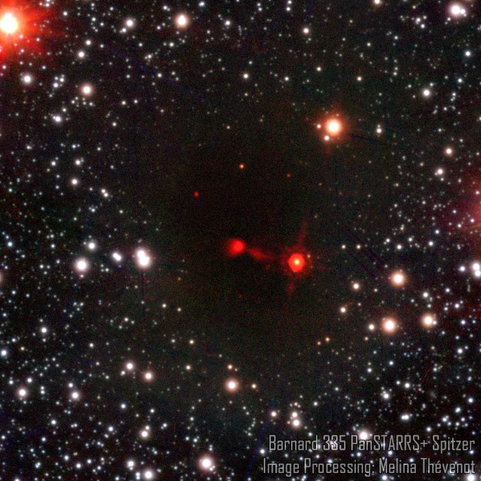
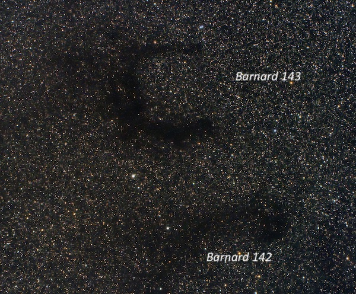
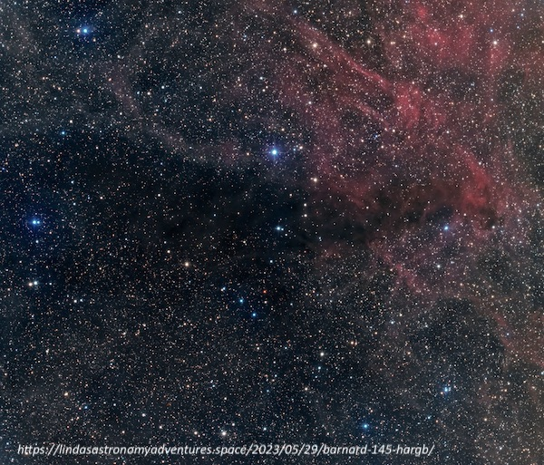

Barnard dark nebulae at Lassen on July 30, 2003
Although the weather was not very cooperative at Lassen National Park a couple of weekends ago, we did have one transparent evening at the Devastated Area parking lot. With the tropical moisture flowing north, conditions were somewhat damp and the seeing a bit soft, so I just stuck a 31mm Nagler in my 18-inch f/4.3 Starmaster and toured some of the Barnard dark nebulae in Aquila and Cygnus at just 63×, with a 1.3° field of view. Randy Muller and Mark Wagner had to put up with my enthusiasm for these obscuring dust clouds.
Barnard 330 = LDN 647
19 19 33.6 +07 34 00
Size 30' × 30'
B330 is a large, darker dust cloud in a Milky Way star field. Appears roughly circular, ~30' in diameter. A wide pair consisting of mag 7.8 SAO 124510 with a mag 10 companion at 54" separation is at the north edge of the cloud.
Barnard 335 = LDN 663
19 37 00 +07 37
Size 5.6' × 4.5'
B335 is a somewhat darker starless region, ~4' diameter, that follows three stars mag 7.5/10.5/10.5. This Barnard dark nebula is not prominent as it is embedded in a larger, low-contrast darker cloud. The border of the surrounding Milky Way appears suddenly at the edges of this darker cloud.

Barnard 142 = LDN 688
19 39 00 +10 37
Size 80' × 50'
At 73x, B142 is a huge dark nebula, elongated E-W, ~40' × 15', and parallel to the two prongs of B143. At the west end, the dark cloud bulges out a bit, forming a bulb. The east end of the prong spreads out and appears to start winding into the Milky Way background field. I could not view both B142 and B143 in one eyepiece field, but the southern prong of B143 and B142 fit nicely in the field. These impressive dark nebulae are located ~1.5 degrees west of Gamma Aquilae.
Barnard 143 = LDN 694
19 41 00 +11 04
Size 60' × 60'
B143 is a huge dark nebula, roughly 40'x40', with two main parallel sections oriented E-W and connected on the east side. The northern section is slightly narrower, but the edges are more sharply defined against the Milky Way background. The eastern edge of the connecting section is irregular and a bit less defined. A similar parallel section, B142, is about 20' further south than the southern prong.

Barnard 145 = LDN 865
20 02 48 +37 42
Size 35' × 6'
At 73×, B145 appears as a distinctive, very elongated dark swath in the Milky Way at least 20' in length, elongated ~E-W. It narrows and darkens on the east end with a small offshoot at this end. It extends beyond a mag 6.9 star off the NW side, but is less distinctive west of the star. This is a fairly impressive Barnard dark nebula and appears as a dark triangular wedge on images. The "Fairy Ring" asterism lies 30' NNE, and the HII region Sh 2-101 lies 2° to the SSW.

Barnard 352
20 57 15 +45 50
Size 10'
Using 73× (31mm + Paracorr), B352 is a fairly high-contrast 10' × 8' dark cloud in a rich Milky Way field, and it appears slightly elongated ~E-W. A gently curving line of 4 or 5 stars runs roughly north and south through the dark nebula, slightly east of center. The edges of the cloud are ragged, and I had the impression of several small fingers of dark nebulosity jutting out from the main body. This dark nebula is situated just north of the North America Nebula, ~1.2° NNW of center.
Barnard 361 = LDN 970
21 12 46 +47 26
Size 17'
Fairly large darker patch in a Milky Way field at 73×, ~12' × 9' in size, elongated WSW-ENE. It seems to encompass a mag 11 star on the west side. Two or three mag 12/12.5 stars mark the east end of the cloud.